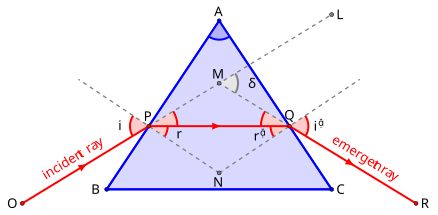

What are we measuring?
To determine the refractive index of the material of a prism.
Equipment
Refraction, prism geometry & minimum deviation
When light passes from one transparent medium into another, its speed changes and the direction of propagation generally changes. This bending is refraction. For two media, Snell's law relates the angles to their refractive indices.
Here i is the angle of incidence, r is the angle of refraction, and n₁ and n₂ are the refractive indices of the first and second media. The refractive index is also related to the speed of light through the medium.
For a prism of angle A, a ray enters the first face, refracts inside the prism and emerges from the second face. The angle between the original direction of the incident ray and the emergent ray is the angle of deviation, δ.
As the prism is rotated, the deviation first decreases, reaches a minimum, and then increases. At the minimum-deviation position the ray travels through the prism symmetrically: the angle of incidence equals the angle of emergence. If the minimum deviation is δm, the refractive index of the prism is
Thus the experiment has two linked measurements. First, determine the prism angle A from the reflected images of the two prism faces. Then determine the minimum deviation δₘ by comparing the refracted image with the direct image. These two quantities are substituted into the equation above.
At minimum deviation, the optical path through the prism is symmetric. This is why the special position is so useful: instead of needing the internal refraction angles directly, the measurable prism angle and minimum deviation are sufficient to determine μ.
These textbook sections develop refraction, prism geometry, minimum deviation, dispersion, and the spectrometer relations used in this experiment.
Refraction and deviation through a prism

Ray diagram showing the incident ray, refraction through the prism, emergent ray, prism angle A, and deviation angle δ.
See the experiment in the laboratory
Watch a laboratory demonstration of the prism setup, spectrometer observations, and the measurement of the angle of minimum deviation used to determine the refractive index.
Experimental sequence
Part A — angle of the prism
- Calibrate the spectrometer by focusing the telescope on a distant object.
- Determine the least count of the spectrometer.
- Place the prism on the prism table with its refracting edge at the centre and towards the collimator.
- Observe the light reflected from the first polished face through the telescope, focus the slit image on the cross-wire and note the telescope reading.
- Rotate the telescope to observe the reflected image from the second polished face and note the second reading.
- The difference between the two readings gives twice the prism angle, 2A. Take half to obtain A.
Part B — angle of minimum deviation
- Rotate the prism table so that light from the collimator enters one face and emerges through the other.
- Turn the telescope to observe the refracted slit image and bring it onto the cross-wire.
- Continue rotating the prism table in the same direction. The image approaches a position where it becomes momentarily stationary and then begins to move back.
- Fix the prism table at this stationary position and note the two vernier readings.
- Remove the prism and observe the direct slit image through the telescope. Note the two direct-ray readings.
- The difference between the minimum-deviation position and the direct position gives δₘ.
- Substitute A and δₘ into the prism formula to calculate μ.
Enter your actual spectrometer readings
| Vernier | First prism face (a) | Second prism face (b) | 2A = b − a | A | ||||
|---|---|---|---|---|---|---|---|---|
| MSR (°) | VSR | Total (°) | MSR (°) | VSR | Total (°) | |||
| V1 | — | — | — | — | ||||
| V2 | — | — | — | — | ||||
| Vernier | Refracted image (a) | Direct image (b) | δₘ = b − a (°) | ||||
|---|---|---|---|---|---|---|---|
| MSR (°) | VSR | Total (°) | MSR (°) | VSR | Total (°) | ||
| V1 | — | — | — | ||||
| V2 | — | — | — | ||||
Experimental result
The angle of the prism is —°, the angle of minimum deviation is —°, and the refractive index of the prism material is —.